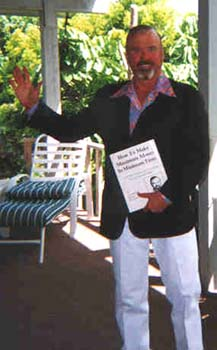

"The Amazing Story Of The
Most Famous Personal Ad
Ever Written!"
Dear Friend,
Some years ago (it seems now like it was another lifetime) I was living in Los Angeles and extremely lonely.
I had a very heavy work schedule... and... I discovered "dating" was something that just didn't seem to work for me. For openers, I didn't have much time for it and, the women I was meeting were not (to say the least) anything at all like what I was looking for.
So... I wrote an ad.
It was a full-page personal ad that ran in a newspaper called L.A. Weekly. What happened as a result of that ad seems almost unreal. As I look back on it now, it seems like it was something that happened in a movie. But, it wasn't a movie. It was real. At the end of this website, there is a photo of a woman sitting at a table reading a copy of that ad. The picture is too small for you to be able to read what the ad says without using a magnifying glass or something. Therefore, before I tell you the rest of this story, I'm going to tell you exactly what that ad said, word-for-word.
The ad began with the question "Are you more than just another pretty face?"
After that question, there was a big headline that said the same thing as the headline at the top of this webpage. Namely...
Generous,
Creative Businessman
Wants
To Find A Hot, Sexy Woman
With
A Good Sense Of Humor
After that headline, here's what the rest of the ad said:
Are you a soft, sexy, exciting lady who would
like
to have a little taste of part-time paradise?
If so, read on.
My
name is Gary and I am looking for a very
special
woman who would like to share a few
small
(but exciting!) adventures with me and who
wants
to enjoy a part-time slice of the good life.
Are
you that woman? Maybe. Maybe not. The
first
thing it depends on is me. You see, if I'm not
your
kind of guy, then what I have to offer may
not
be your idea of how life should be lived.
So
let's start with me. Here's what my life is
like.
First of all, I'm an early riser. I usually get up
around
6 a.m. and eat a piece of fruit and drink
a
cup of coffee, and then, on most days, by 6:30
a.m.
I'm jogging around Lake Hollywood. How
far
I run depends on how good I feel. It's never
less
than three miles and seldom more than
seven.
When I'm finished, I get into my car and
drive
to a place I call "The House of Pain"
(actually
the sign outside says Vince's Gym)
where
a stone-age sadist who masquerades as
a
fitness instructor forces me to use dumbbells,
barbells,
and other fiendish contraptions in ways
for
which my body was not designed.
Whatever.
After about an hour of this, I travel
to
yet another establishment where I give my
tired,
hurting body a chance to recover while I
rest
upon a UVA suntan bed and listen to
soothing
music (usually Rod Stewart or Jimmy
Buffett)
on a pair of stereo headphones.
By
the time I am finished, it is approximately
9:45
a.m. and what I do next is go home,
shower,
change into fresh clothes and eat a light
breakfast.
Finally, after all this, I go to work.
And
boy, do I ever work! I love what I do for a
living,
and, I must confess, I am truly a
workaholic.
For example, right now I am
attempting
to put together the financial and
promotional
packages for 10 different feature
films.
I am writing two books (one fiction and one
non-fiction).
I am collaborating on a screenplay
and
I am attending to the details of two
businesses
I own personally, and also, to the
business
details of several corporate and
personal
clients whose names are household
words.
It's quite a workload.
And
what do I do after I stop working? What
is
my big reward for all this running and grunting
and
pumping iron and stretching and straining
and
writing and thinking and solving and creating
and
caring and so on?
Nothing,
that's what! Nada. Zip. Not doodley
squat.
No "Miller Time!" No drugs. No sex. No
rock
and roll.
Not
even a little wine and some quiet
classical
music.
Why?
The answer is simple. You see, for the
last
3-1/2 months, I have been spending my
evenings
and weekends on a marathon of non-
stop
sulking.
Why
have I been sulking? Good question.
And,
once again, the answer is simple. You see,
up
until 3-1/2 months ago, my "Miller Time" was
terrific.
It was terrific because there was a very
beautiful,
very erotic, very special lady in my life
and
we were in a relationship I thought would
last
forever. But, that relationship has ended. It
has
ended stupidly, tragically, and for insane
reasons
totally beyond the ability of any human
to
control.
Well,
such is life. But what's done is done and
3-1/2
months worth of sulking is more than
enough
for anyone and now it is time for me to
climb
up out of my sulk and find myself another
special
woman.
So
why write an ad? Why do I have to
advertise for a woman? Am I some kind of geek
with
two heads and bad breath?
No,
I am not. I'm a reasonably attractive
(maybe
even semi-handsome?) caucasian male
in
his mid-forties with a sparkling personality
(except
when I'm sulking), a keen wit, a steady
hand,
and a clear eye. I've got a good tan, dark
brown
hair and a short, neatly trimmed dark
brown
beard with a couple of "interesting" spots
of
grey. I am of average size. Not short, not tall,
not
fat, not skinny. I'm in excellent health. I'm not
hurting
for money and I can look any maitre de in
the
country right square in the eye without flinching.
So
once again, why do I have to advertise to
get
a woman? Well, actually, I don't. I've been
married
twice. I've had a few other serious
relationships
and, of course, my share of one-
night
stands and short-term romances. I've
enjoyed
the company of a few really outstanding
ladies
and I want to do so again.
But
you know what else? I've also met many
ladies
who were not so outstanding. In fact, I've
met
more than a few women who, although they
had
great exteriors, they were, on the inside, flat
out bummers!
Want
some examples? You do? OK, you
asked
for it. Try these out for size.
Zelda
The Princess: Zelda is a 26-year-old
Jewish
lady who waltzed into my office and
immediately
informed me (before I even had a
chance
to say hello) she wanted me to write an
ad
for her and she wanted to go to bed with me.
Well,
what the hell, on some days I'm a
pushover.
She got what she wanted and I must
admit,
she gave me one of the most thorough
screwings
I've ever had in my life.
Unfortunately, it didn't happen in bed.
And,
what happened in bed was unfortunate
also.
You see, Zelda's idea of good sex is
brutality.
She wants a man who will slap her
around,
degrade and humiliate her and, quite
literally,
bounce her off the walls.
Sorry,
but that's not for me. I like to make love
with
a woman, not war.
Sherry
The Tragic: Sherry was a secretary
and
a go-go dancer. Great body, a very pretty
face
and a good sense of humor. Unfortunately,
she
was also a "walking accident" looking for a
place
to happen. She was always in court on
charges
relating to neglecting her four-year-old
daughter
and her ex-boyfriend was a Mafia hit
man
(true) who wanted her back and was trying
to
find her.
We had a very brief affair.
Karen
The "Would-Be" Prostitute: A
gorgeous
woman who, after our affair got going,
confessed
to me she wanted to live her life as a
hooker.
Then she informed me she wanted me
to
be her first "John" and I should start paying her
for
sex. When I refused, she decided I would be
her
lord and master (pimp) and she would have
sex
with other men and make them pay and then
give
the money to me.
This also was a very brief affair.
Claudia
The Actress: Sensational looks. A
real
traffic stopper. I used her in a few full-page
ads
and I created a perfume promotion based
around
her. We started hanging out with each
other
and I was the envy of all the men who saw
us
together.
Except
me. I wasn't envious of me at all.
Claudia
had a terminal case of tunnel vision.
The
only thing she could focus on whatsoever for
more
than 10-seconds was her precious career.
She
was deadly dull. I couldn't sustain
enough
interest in her to even take her to bed.
I
could go on and on. All of these examples
(except
for the names) are true. They have not
been
made up. In fact, they have been toned
down!
And
so far, I haven't even described what I
consider
the worst category of women at all.
These
are women who, in my opinion, might
actually
be clinically crazy. You want to know
how
I can tell? It's easy. You see, these are all
the
women who do not have any of the
drawbacks
that turn me off, and who, for some
inexplicable
reason, are not interested in me.
Can you imagine that?
What
do I want in a woman? Well, I've got a
pretty
good idea but I am, I must admit, quite
flexible.
However, I have a very clear idea of
what
I don't want and it is here I am not flexible
at
all. So let's start with that. Here then are...
7 Things Gary Does
NOT Want From A Woman!
#1.
DEATH OR DISEASE: This is my number
one
no-no. Listen, I've never had sex with a gay
man,
a bi-sexual man, a transsexual man or any
kind
of man at all. I hardly ever go near Santa
Monica
Boulevard and, when I do the only place
I
ever stop is Barney's Beanery.
And, even then, I never eat quiche.
In
other words, I'm straight. Also, I'm not a
hemophiliac.
I've never had a blood transfusion.
I'm
not a junkie and I never stick needles into my
body.
I'm not promiscuous. I don't mess around
with
prostitutes (I tried it years ago and it was
boring),
and I've never even been close to Africa
or
Haiti.
What
this means, of course, is with any kind
of
luck at all (knock on wood) I do not have
AIDS.
Also, to my knowledge, I do not have any
other
type of dreadful communicable disease
including
syphilis, gonorrhea, herpes, hepatitis,
or
even the bubonic plague.
If
you can't say the same, please, please do
NOT
respond to this ad.
#2.
DRUG DRAMAS: Do you like to drink a
little
or get a little high once in a while so you can
loosen
up and party down? You do? Good! That
means
you and I can have some fun. But
please...
read that first sentence again. See
where
it says "a little" and "every once in a while"?
Those
words are important to me. Therefore, if
your idea of "a little" and "every once in a while" is
to
get drunk or stoned every day, if the way you
like
to use cocaine is by freebasing or injecting it,
if
you gulp down Valium or Quaaludes by the
fistful,
if you use PCP or heroin in any way,
shape
or form, then I must, once again, ask you
to
please NOT answer this ad.
#3.
DESPERATE DILEMMAS: Are you
sleeping
in your car because your rent is six
months
overdue? Is your ex-husband a hatchet
murderer
who is trying to track you down and
who
swears to mutilate any man who so much
as
looks at you? Are you in desperate need of
fast
money because your poor old mother needs
a
kidney transplant in order to keep on living?
I'm
sorry. I really am. But I'm just an ordinary
everyday
nice guy. I'm not Superman or even
Lee
Ioaccoa. I'm very compassionate and very
understanding
but I have recently retired from
trying
to save the world.
Therefore,
I'm not qualified to save your life.
However,
if you will let me, I might be able to
enhance
it by adding to it some excitement and
romance.
#4.
MARRIAGE: I've been married twice and,
both
times it spoiled a great romance. I don't
want
to get married again and I don't want to live
with
you either. You see, at this point in my life, I
don't
want to own a woman. I just want to enjoy
one.
It
would be nice if you decide to answer this
ad,
if you already have some sort of life of your
own.
I don't want to be your everything. I would
much
rather be that special somebody you see
two
or three times a week and who makes you
feel
good.
Would that be OK?
#5.
I DON'T WANT A SEXUAL SWINGER:
Do
you spend your evenings attending orgies at
the
A-Frame? Do you have a lifetime
membership
at Plato's? Do you refuse to call
yourself
a prostitute even though you run a credit
check
on every man you meet before you go to
bed
with him? Do you have a time clock in your
panties
and a cash register in your bra?
Sorry, we're not compatible.
You
know, even though I've been married
and
I've been around, I feel that by Southern
California
standards, I'm almost a virgin. For
example,
someone told me recently Hugh
Hefner
has been to bed with more than 3,000
women.
Could
that be true? I don't know but, if it is, he
is,
in my opinion, a man to be pitied, not to be
envied.
I'll take quality over quantity any day.
#6.
I DON'T WANT A SEXUAL PRUDE: I bet
by
now you think I'm repressed, don't you? I bet
you
think the hot throb of lust does not live in my
loins.
I bet you think if you and Kelly LeBrock
showed
up at my door with a suitcase full of
excitement
from Trashy Lingerie (they're located
at
402 N. La Cienga and they've got the hottest
stuff
in town!) and suggested we have a menage
a
trois I would toss you both out on your ear and
report
you to Jerry Falwell.
You
are wrong. You are wrong. You are
wrong.
You are wrong.
Fear not. I may be cautious but I'm not crazy.
Hark
unto me. Listen. Just because I'm not
into
freebasing, orgies and non-stop promiscuity
doesn't
mean I'm dead. It's true I don't want a
woman
who's been sleeping with everything in
pants.
However on the other hand, if you are a
35-year-old
virgin who thinks foreplay should be
1/2
hour of begging and "oral sex" is the name of
a
disgusting new group of punk rockers then,
you
may rest assured, our stars were simply not
meant
to cross.
#7.
I DON'T WANT A WOMAN WHO CAN'T
STAND
PROSPERITY: Don't laugh. I lost the
love
of my life because things got "too good."
Some
people are into the struggle and not the
reward.
I'm
into both. As you already know, I like to
work
but work without reward is senseless. It
seems
to me many women (and men) just insist
on
filling up their lives with a lot of needless
trauma.
Not
me. I want the payoff along with the pain.
Therefore...
"If
you don't want the good
And
just want the bad,
Don't
waste your time
By
answering this ad!"
Good Lord, that was corny, wasn't it?
Well,
anyway, that's my laundry list of what I
don't
want and in fact, what I can't handle. Now
comes
the hard part. I really feel awkward about
saying
what I do want. I'm afraid if I get too
explicit
it will seem like I'm an insensitive clod
ordering
something from a Chinese menu.
On
the other hand, if I don't set down some
guidelines,
I'm afraid this ad will be answered by
many
women with whom I would not be at all
compatible.
So
please, give me a break. I'm not nearly as
definite
about what I am about to write as it will
appear
in print. Remember, what I am about to
write
is not etched in stone.
Anyway,
here I go. My idea of a perfect
woman
is someone who is intelligent and healthy
with
a good sense of humor and someone who
will
take my breath away when I see
her in a
string
bikini!
As
far as age is concerned, if you are
somewhere
between 25 and 35 that would be
just
fine and, if you are a little younger or a little
older,
that is probably no big deal.
I
like women who take care of themselves. If
you
have a slender, healthy body, a reasonably
slim
waist, rather generous (natural) breasts
(God
that sounds redneck, doesn't it?), a very
pretty
face and a good sense of humor then
quite
frankly, you sound like heaven to me!
So much for specifications.
And
now if after all this, you are still
interested,
what can you expect from me? Well,
the
first word in the headline of this ad is
"Generous"
and I am just that. However,
generous
does not mean "chump." It also doesn't
mean
I want to pay for sex. That's ridiculous.
Any
man in L.A. who wants to pay for sex doesn't
have
to write an ad, all he has to do is answer
one.
Those ads are all over, even in the yellow
pages.
Here's
what I mean by generous. I love to
buy
presents for women. I like to take them to
movies
and plays and I love to send flowers and
buy
them jewelry and clothes and, if I really get
involved
with a woman, I rather enjoy helping to
support
her and helping her to elevate her
lifestyle.
Also,
I give great vacation. I love to travel for
long
weekends (four days or so) to Acapulco,
Hawaii,
Fort Lauderdale, the Bahamas, and so
on.
I only fly first class and I try to always stay in
the
best hotels and eat in the best restaurants.
Does
any of this sound good to you? I hope
so.
This is an honest ad. Every word is true and
although
I've made a modest attempt to make it
entertaining,
you should also know I am sincere.
Are
you leery about answering a personal
ad?
I don't blame you. I sure am. Before I
decided
to write this ad I started reading other
"personal
ads" and they scare the hell out of me.
I'm
always afraid they are being written by
sexually
sick people or real losers and
sometimes
by people who are downright
dangerous.
I
mean have you read those ads? They go
like
this:
"Psychotic
white woman wants to be sodomized
by
12 cuban truck drivers and a boa constrictor
while
husband watches and salivates. Call 1-800-
NUT-CASE."
Or like this:
"96-year-old
lady with youthful outlook wants to
meet
vegetarian non-smoker to discuss saving
the
whales and other ecological concerns."
Or:
"Pleasingly
plump 590 pound woman wants to
meet
sincere fun loving man to care for her and
her
lovely 18 children."
And so on.
I'm
not like that. Really, I'm not. I promise. I'm
a
reasonably normal healthy male who would
like
to add a little excitement and romance to his
life
with a reasonably normal, healthy female.
If
you are at all interested or even curious,
please
write and tell me about yourself and how
to
get in touch with you and, also, please send a
recent
full length photo.
Who
knows. Maybe we'll click and maybe we
won't.
But, at the very least, you won't be writing
to
some sick psychotic and maybe, just maybe,
it
will all turn out great.
Just write to:
Semi-Handsome Gary
1544
N. Curson Ave.
Los
Angeles, CA 90046
Thank you for your support.
For a personal ad, that one was a little different, wasn't it? It took a lot of nerve for me to write and publish that ad... and... I never had a clue what was going to happen.
I didn't care about any of that. I wasn't interested in doing a movie or TV show, writing a book or giving interviews. All I wanted was to meet a few special women and put a little spice and romance into my life.
Did it work? Did any women answer that ad? You wouldn't believe it! I got replies from all over Los Angeles, all over the United States and, all over the world. And you know what? Some of my friends said I'd get nothing but "gold-diggers."
They were totally wrong. The women who replied to my ad were gorgeous, above-average in intelligence, had their own lives, had a good sense of humor... and... were as burned-out as I was on the time-wasting process of dating. I think I could have been happy with any one of several of them. But, I got hooked by one very special lady. She was a drop-dead redhead and one of the nicest, sweetest women I've ever met. She had two children (one girl, one boy) and she was going through a divorce from a "wannabe" actor. This guy did nothing but sit around and wait for the phone to ring... which meant... "Annette" (not her real name) had to work two jobs just to keep the bills paid.
We started dating, her divorce got finalized and we ended up living together for seven years. Five-and-a-half of those seven years were wonderful. I think I was the happiest, most-contented man on earth. Then, it started to go bad. Why? I think there were a number of reasons. Like most relationships and/or marriages that fail, there is seldom just one thing that causes the breakup. More likely, there are a number of reasons... and... quite often, the real reason never surfaces.
In this case, I'd say I was far more at fault than Annette. I was so contented and satisfied, I got sloppy and, quite frankly...
I Started Taking
Her For Granted!
For any men who might have stumbled onto this website, I'd like to say, if you really cherish a woman... taking her for granted is a stupid, stupid thing to do!
However, the breakup wasn't totally my fault. I'd like to explain something about Annette. This only came to light during the last couple years of our relationship. Remember in my ad how I said (#7) "I DON'T WANT A WOMAN WHO CAN'T STAND PROSPERITY"? Well, I was doing OK financially when Annette and I started dating. But, with her as an inspiration... and... as a valuable helpmate in my business... the two of us started making some serious money! After a couple years, I told Annette she ought to get rid of her second-hand Oldsmobile and let me buy her a Rolls Royce. Unfortunately, she got her earliest imprinting from the Catholic Church and she felt she didn't deserve a Rolls.
Then, I got an idea. I told her OK, I understood. But, I also explained how having a Rolls Royce would help us impress clients and would she consent to help me pick one out. She was OK with that so we went shopping. I had her "test drive" each car... and... guess what? By the time we found the one with the color scheme she liked best (forest green with mahogany trim) you couldn't pry her skinny ass out of that driver's seat with a crow bar. She loved that car and reveled in driving it.
Until her guilt caught up with her.
About one-and-a-half years before we split up for good, Annette began expressing her feelings about how she didn't deserve to be living such an excellent lifestyle. (We had a really nice house in Key West with a double-sized tropical back yard complete with a swimming pool, sauna and even a waterfall.)
Annette didn't deserve to be living in such a house.
Annette didn't deserve to be driving a Rolls Royce
Annette didn't deserve to be vacationing on the French Riviera.
Annette didn't deserve to be scuba diving all over the world.
And on and on.
I tried explaining to her we weren't really rich (we weren't) and that we were just well off. Besides, we both worked very hard for everything we had achieved. However, no matter how hard I tried, I was just no match for the load of guilt imprinted on her psyche by the Catholic Church during her developmental years.
Then, her children started getting into the normal kind of trouble that nearly all teenagers get into.
Because of all this, Annette decided she wanted to move. She announced she didn't want to raise her children in the evil, dangerous (it isn't) environment of Key West. She said she wanted to move to the little town in upstate New York where she spent her childhood. It's only 30 miles from the Canadian border, doesn't even have a movie theater and, in the winter, it gets down to 40 degrees below zero.
Well, there's no way I was going to leave balmy Key West to go live in a one-horse town and freeze my kadinkus off.
So, she and the children moved and I didn't.
We made a weak attempt at trying to keep what was now a "very long-distance" relationship alive. She would fly into Key West or I would fly to "Icebergsville."
It didn't work and it wasn't long before she told me she wanted to end the relationship. I could lie to you and tell you I had an "oh well" attitude about that... but... it wouldn't be true. The truth is, it tore my heart out. At that time, I didn't drink or smoke at all... and... I had not for years and years. (By the way, I don't drink or smoke at all now.) But, during that period of time, I drank and smoked cigarettes like a drunken sailor.
It damn near killed me.
It wasn't too long before I realized I had to put this behavior behind me and get on with my life. So, I totally quit smoking and drinking and realized I had to get out of Key West. Everything there was crammed with memories of Annette, the kids, our two Rottweilers (Max and Sugarpuss), our family cat (Noah) and all the great times we had there.
I simply needed to get away from all those "memory triggers" which did nothing but cause me great emotional pain.
So, I moved to South Miami Beach (SoBe) and set up camp in an apartment owned by Emilio Estefan (Gloria's husband) right smack dab in the middle of Ocean Drive. There's no place else in the world like South Beach and, especially Ocean Drive, which I'll tell you all about in a minute.
But first, you deserve to know whether or not I got over Annette... or else... am I still longing for her, still hoping in my heart-of-hearts some day we will be together again.
The truth is, I am totally not in love with her. I haven't been for nearly four years now. In fact, I can remember the exact moment when I knew that was true. It was when she and I were having a telephone conversation which I cut abruptly short because...
I Was Bored!
See, the opposite of love is not hate. It's indifference. The person Annette is today is someone so boring (at least to me), I don't think she could keep me awake long enough for us to have even a dinner date. Her life now totally revolves around religion. When I say totally, I mean totally! She's even married to a priest! A stuttering, insecure Presbyterian priest. He's a chaplain in the Navy and they are hardly ever together. He'll be home for a total of six weeks this year.
All the rest of the time, he'll be on a Navy troop ship taking care of the needs of all those young, Navy boys.
By the way, as soon as she moved away from me, her relationship with her children completely deteriorated. They hated the priest (still do) and became far wilder and uncontrollable in "Icebergsville" than they ever were in Key West. They both moved away from home shortly after her marriage.
Is Annette a bad person? Not at all. I still think she is one of the sweetest, most caring women I've ever met. She's just insecure and "guilty," that's all. Guilty of what? I don't know. I guess she totally bought the concept of "original sin" and has never been able to shake it... and... she honestly believes she doesn't deserve a good life. She and I are still friends or, at least "friendly." We communicate once in a while by e-mail which frightens and threatens the priest. Believe me, his fears are totally unfounded. All we ever communicate about is an occasional update on people we both know and other innocuous stuff like that.
Anyway, who cares? That's all I'm going to say about Annette. I wouldn't have gone into it this much except I wanted you to know what a dramatic change of direction my life took because of running that full-page personal ad.
And Now,
I'm Going To
Tell You About
South Beach!
The City of Miami covers an area of approximately 2,000 square miles. The City of Miami Beach is about 53 square miles. The southern tip of Miami Beach, which has the world's largest concentration of Art Deco buildings, is called South Beach or simply, SoBe. SoBe covers an area of only 1-1/2 square miles. Yet, according to Playboy magazine, that 1-1/2 square miles has...
More Beautiful Women Per
Square Foot Than Any Other
Geographic Location In The
History Of The Earth!
Playboy magazine is right. So, after visiting the area a few times, I decided, if I was going to have to be a single man at this stage of my life (which incidentally, was totally unexpected) I may as well be single in SoBe. As I said, I got myself an apartment right smack dab in the middle of the world-famous Ocean Drive. I was in the top floor of the building where Lario's Restaurant is located (owned by Gloria and Emilio Estefan and the Larios family) and right next door to the legendary News Cafe.
The area more than lived up to its reputation. I had never seen so much "eye-candy" in my life.
The women are indescribably gorgeous... and... so are the men. I lived there four full years and I never stopped marveling at the magnificent specimens of humanity to be found right outside my apartment 24-hours a day, 365-days per year.
How did these people get so attractive? Part of it is excellent genetics, part of it comes from being so deeply immersed in narcissistic body worship... and... part of it comes from little-known reasons.
Let's take a moment to discuss a few of those little-known reasons.
Let's look at the men first. Most of those drop-dead gorgeous males are gay. Not only that, the ones with the best bodies of all have AIDS. Having AIDS means a doctor will give you steroids to keep you from suffering the "wasting away" consequences that go hand-in-hand with having AIDS.
Also, gay guys usually take better care of their appearance than straight men... and... when you combine this with steroids and hard-core body worship, you end up with some incredibly attractive men.
Who are very disappointing to the women who swoon over them at first sight.
And the women... South Beach is a mecca for models, both real and "wannabe's." To be a model (as they will tell you themselves) you have to be, first of all, a "genetic freak." Unusually tall, thin and well-proportioned. But even with all this, to be a top model you've got to have an "edge." Here are some of the things models do to get that "edge":
They
Smoke: Almost 100% of real and aspiring models smoke.
To be a model
requires you be unnaturally thin and, smoking is an
excellent tool to reduce hunger.
(Of course, it'll kill you... but... who wants to think about that?)
They
Do
A Lot Of Cocaine: If you want to kill hunger, cocaine works
even better
than cigarettes. Snort up a few lines and food will be the
last thing on your mind. True,
you might become addicted and ruin your life or have a seizure and
die. But hey,
getting on the cover of a hot magazine is worth any price, right?
They
Vomit
A Great Deal: Have dinner with a model and she'll do one of
two things:
She'll either gorge herself (and tell you her metabolism lets her
eat anything she wants)
or she'll eat about 25 calories worth of lettuce and carrots.
If she chooses the first option (gorging) she'll excuse herself to
go to the restroom right
after the meal... whereupon she will disgorge her
meal. (Models have vomiting down
to a science; they can get the job done in one minute flat.)
Models
Usually Have Nothing In Their "Tool Kit" Except Their Looks:
There
are, of course, some exceptions but, most models have gotten by on
their looks nearly
all their lives. This spares them from having to develop
people skills like courtesy,
empathy and responsibility.
As one visitor to South Beach said...
"The People Here Are
Gorgeous... And... As Shallow As
A Mud Puddle!"
To make matters worse, Miami and South Miami Beach are not really American cities. They are Latin. English is a "second language." Sometimes, in store windows, you'll actually see signs that say, "English Spoken Here."
Put this all together and you've got a place where someone like me just doesn't fit in too well. Ocean Drive is 15 blocks long and I was the only middle-aged, white, heterosexual, non-Spanish speaking resident in the entire 15 blocks.
Actually, I must admit, I did have some "adventures" in South Beach. But, living there I was truly a "stranger in a strange land." After four years, I moved back to the best place on earth, the Florida Keys. The Keys are where I mostly live... but... I also still live in South Beach part of the time. And Ft. Lauderdale, Key Largo and several other places on the coast of southeast Florida. You see, instead of a house or an apartment, I now live on a boat.
But, please... don't feel sorry for me. It's not a small boat. It's an ocean going houseboat (you might even call it a houseyacht) with 2 bedrooms, 2 bathrooms, plenty of living room, lots of deck space and even a washer and dryer and, my own special computer room. The way I live now is, I spend a few months in Key West, and then, when I get "rock fever" I untie the lines and cruise on up to Miami Beach, Ft. Lauderdale... or maybe... I even cruise over to the Bahamas.
There's no grass to mow, I don't have a garden... and yet... somehow... it works for me.
However, as I said, I spend most of the time in the Florida Keys and there is one teensy, little drawback to living here.
There Are No
Available Women!
All the women here are married, already in a committed relationship, tourists or "creatures of the night" who party non-stop with an intensity that would reduce me to a brain-dead zombie. My life is very together now. I love my work, my lifestyle, my surroundings and everything else. Except... once again...
I'm lonely.
Obviously, I've seen a number of women since Annette and I broke up. I must admit, I fell in love with two of those women. The first was a young lady named Cherie whom I met in Mississippi on a business trip. She was very excited to meet me and, as soon as we were introduced, she started telling me how she had read my book (How To Make Maximum Money In Minimum Time), every single issue of my newsletter (which I started publishing in 1986) and how she had loved watching all the videos of my seminars. As she continued, I realized she was "coming on" to me.
I couldn't believe it. She was far too young. About 17, I guessed. She said she was 27, divorced and had a seven year old daughter. Quite frankly, I didn't believe her until she showed me her driver's license. Actually, 27 is still way too young for me as far as I'm concerned. But, this was not your usual 27 year old female. She was sweet, gorgeous, incredibly sexy and had a wisdom well beyond her years. To make a long story short, we ended up living together for a while in Florida. Then, I wanted to take a break, put a little space between us and ponder a bit about this situation I had gotten myself into.
After a time, I realized how much I truly missed her and I decided to call her in Mississippi and ask her to come back to Florida.
I was one day too late.
The day before I called, she was murdered. She was stabbed to death by a jealous young man who wanted to marry her. He was arrested and imprisoned almost immediately. But, that didn't do much to assuage my sorrow. That was 3-1/2 years ago and, if you don't mind, I'd just as soon not get into this subject any deeper.
After Cherie, I did fall for another woman. Her name was Nudia. She was a tall, blond beauty from Spain who made me melt every time I looked at her. That relationship was short-lived simply because... she didn't fall in love with me!
Can you believe that? I don't understand how in the world any woman could not fall in love with me. But, guess what?
A High Percentage
Of Women Find It
Very Easy To
Resist My Charms!
The truth is, I'm just not everyone's cup of tea. Truth be told, I'm not most people's cup of tea. I believe in God, I pray and consider myself spiritual. But, I believe organized religion (especially Catholicism) causes an unbelievable amount of suffering.
I think all politicians are scum and I never vote for any of them. I can't dance worth a hoot. (I wish somebody could teach me.) I have thinning hair and I'm sometimes very petty. Plus, I still indulge myself in a lot of sulking.
How petty am I? Here's an example: I have a favorite color combination. It's peach and teal. There's a special shade of peach (it had a coral pinkish tint to it) and when I was with Annette, I had a huge Cadillac Sedan Deville painted that color. I loved it and Annette hated it. You need to know that (except for when we were behind locked bedroom doors) Annette was a very "proper" woman. It was hard to get her even to ride in such a flamboyant car.
Well, when we were breaking up, she told me she was selling the Rolls. I knew the guy she was selling it to. He was a rip off artist who was practically "stealing" the car from her. So, I said, "Why don't you sell the Rolls to me?"
She did. You know it's kind of weird. First, I bought the Rolls for her... then... I bought it from her!
Guess what I did right after I bought it? You're right. I had it painted that peach/pink color I love so much and Annette hates. It gave me a great measure of momentary satisfaction.
But now, I have a peach/pink colored Rolls Royce I never drive, which simply takes up space and is gathering dust in a place called Andy and Dave's Garage. In just a minute, you can click on a link that will take you to a photo of me sitting on the hood of the damned thing.
I wonder what I should do with that huge hunk of iron? I'll figure out something I guess.
But, there are some good things about me. For one thing, I've led kind of an interesting life. I've worked with Ernest and Tova Borgnine, Vikki LaMotta, Don Drysdale, Nancy Quan, Elke Summer, dozens of top models and many other celebrities and multi-millionaires. I publish a newsletter that's read in 50 countries. I give expensive seminars and I've made a number of video and TV shows.
I'm proud to say, I'm the only man who knows the location of the Domestic Abuse Shelter in the Middle Keys. That's because I almost single-handedly raised and contributed the money to build that shelter. (I HATE men who abuse women and children!)
I gave a world-famous hurricane relief seminar at the Holiday Inn in Key West... and... I raised more money for the victims of Hurricane Andrew than any other single individual.
Let's see, what else is good about me? Well, I'm incredibly good looking and... I have the body of a Greek God!
Wait! I got lost in a fantasy there for a moment! I'm actually a pretty average-looking guy with a pretty average body. I guess I'm slightly on the muscular side and, my stomach... really is... as flat as a board. However, I don't have those six pack, "washboard abs" that are so common in South Beach. To get them, I'd have to take steroids... or else... work out and diet much more seriously than I do now.
It's not worth it. At least, not to me.
I guess you'll form your own opinion about how I look when you click on my photos.
What's changed since I wrote the first ad until I decided to write this one?
First of all, I'm older. I won't tell you my age (it would be rude of you to ask)... but... since I was in my mid-40's when I wrote that first ad... and... since that was back in 1985... you don't have to be a mathematical genius to figure out I am now what some people would consider to be "an older man."
That sucks. But, there you have it.
I still do a lot of roadwork (I use a treadmill now instead of running around Lake Hollywood) and I still work out in a gym three days a week. The gleeful sadist (Vince Gironda) who used to train (and torture) me back in California has passed away. He has been replaced by a smallish 5'3" woman named Marilyn White (whom I affectionately think of as "The Nazi Bitch"). Marilyn, by the way, owns Marathon Nutrition and Fitness in the Florida Keys.
Incidentally, for my money, Marilyn is the best trainer in the world and, if you're ever on vacation in the Florida Keys and looking for a gym or a trainer, she's the best.
What else? Oh yeah, I guess you need to know what I'm looking for. Basically, it's the same thing I was looking for in the first ad. I have a weakness for women who are amazingly good-looking (my dream girl is the model for Victoria Secret's wonder bra)... and... it's very important to me all the people in my life be sweet and good-hearted. If you're pushy, tough and caustic, don't bother to answer this ad. One other thing: It may sound odd... but... I like people who read. Whenever I meet someone (male or female) who hasn't read a book in years, it's hard for me to get really interested in them.
Also, I can't imagine having a serious interest in a woman who smokes.
How do you answer this ad? You can't do it by e-mail. Why? Simply because most on-line relationships are phony. In real life, it doesn't work like it did in the movie "You've Got Mail" starring Tom Hanks and Meg Ryan. Much of the time, in real life, it's one fat, ugly person writing to another fat, ugly person. Often, it's two guys writing to each other and one of them is pretending to be a woman.
So, if you're interested in meeting me, you'll have to write me a letter. You've also got to enclose a few recent photos of yourself. It's only fair. You now know a lot about me (including what I look like) and I deserve the same courtesy from you.
I'll answer your letter and, if we seem to have a spark, we'll talk a few times on the phone. Then, if we're still "sparking," I'll pay your way to fly to Key West or South Beach, put you up in a great hotel and pay all your expenses. We'll walk on the beach, play with my jet boats, maybe go to a movie, have a few nice dinners and see what happens.
Who knows?
Anyway, here are the photographs:
| photo #1 which shows my smiling, semi-handsome face. | |
| photo #2 which will give you an almost full-length shot of my "killer" body as it looks in slacks and shirt. | |
| photo #3 which shows my Aunt Wanda (who thinks I'm a total nutcase) reading a copy of my first (1985) personal ad. | |
| photo #4 which shows me sitting on the hood of my Rolls Royce which I never drive. | |
| photo #5 which shows one (I have four of them) of my "flying saucer" jet boats that I DO drive. A lot! | |
| photo #6 which shows me shortly after the "Nazi Bitch" has finished torturing me at the gym... and before... I've had a chance to shower. (Gross!) | |
|  |
photo #7 which shows me showing off a copy of my book "How To Make Maximum Money In Minimum Time." |
| photo #8 which shows me offering a toast to you and hoping you will write. |
OK, that's it. You've seen the photos and read my story. If, after all this, you think you might be interested in meeting me, send me one or more photos of yourself and a letter telling me a little about you. Here's the address:
Semi-Handsome
Gary
c/o
Peg Leg's Marine Center
59073
Overseas Hwy
Grassy
Key, FL 33050
Thanks for reading all this. I hope it wasn't a waste of your time.
Gary
P.S. I have absolutely perfect teeth.